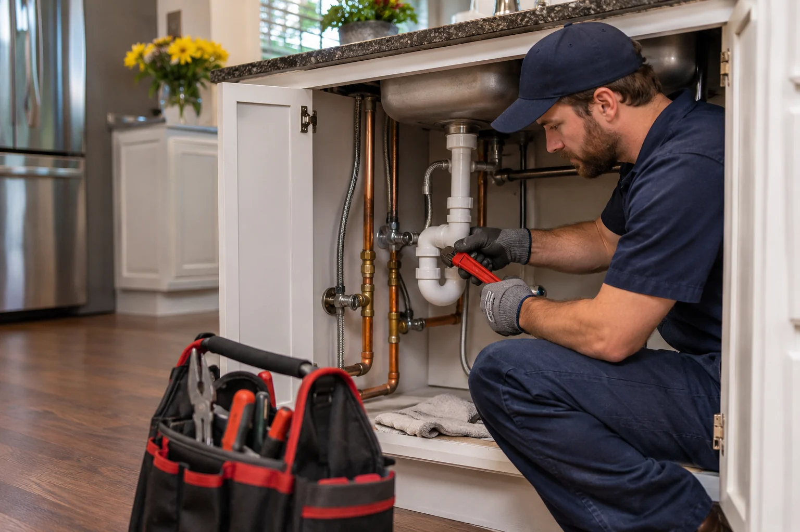

Looking for Plumbing Help in Kansas City?
Explore common plumbing repair and replacement services, and call to enquire about available options in your area.
Call To Enquire Today!
(555) 555-5555Need Plumbing Assistance?
Call To Enquire!
Have a plumbing question or looking for repair options? Speak with a service representative by phone.
☎ (555) 555-5555Calls may connect you with an independent third-party service provider. Availability is not guaranteed.PLUMBING SERVICES
Plumbing issues range from minor leaks to larger repair and replacement projects. The information below describes some common reasons people seek professional plumbing assistance.
Plumbing Repairs
Leaking pipes, faulty fixtures and other household plumbing concerns may require assessment and repair.
Drain & Pipe Issues
Slow-draining fixtures, blockages and damaged pipework are common reasons to seek plumbing advice.
Replacement Work
Water-related fixtures and pipe components may need replacement when a repair is not suitable.
WHY CHOOSE PROFESSIONAL PLUMBING HELP?

Plumbing repairs often benefit from a careful assessment of the underlying issue before work begins.
Depending on the problem, a qualified service provider may be able to discuss repair or replacement options appropriate to the property.
☎ (555) 555-5555Our Service Area!
Information for people looking for plumbing services in and around the Kansas City area. Actual provider coverage should be confirmed when you call.
- Kansas City, MO
- Platte City, MO
- Plattsburg, MO
- Smithville, MO
- Kearney, MO
- Excelsior Springs, MO
- Gladstone, MO
- Parkville, MO
- Riverside, MO
- Holt, MO
- Edgerton, MO
- Lathrop, MO
Ready To Get Started?
Call to enquire about plumbing service options.
☎ (555) 555-5555Back To Enquiry Section